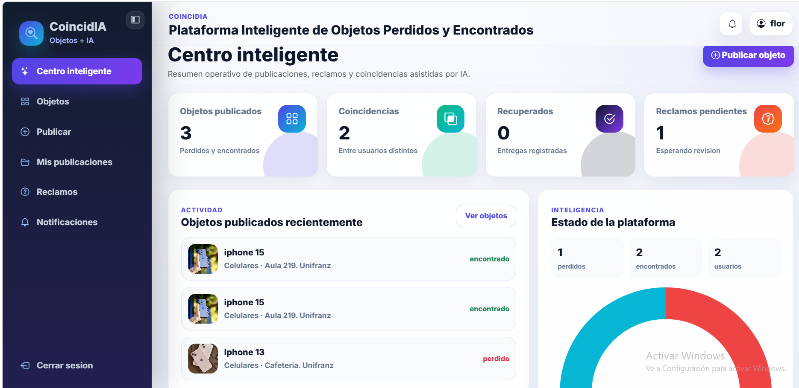
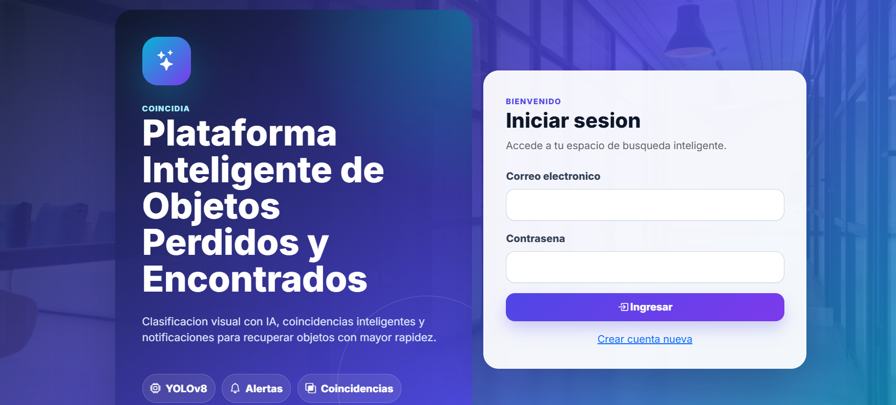
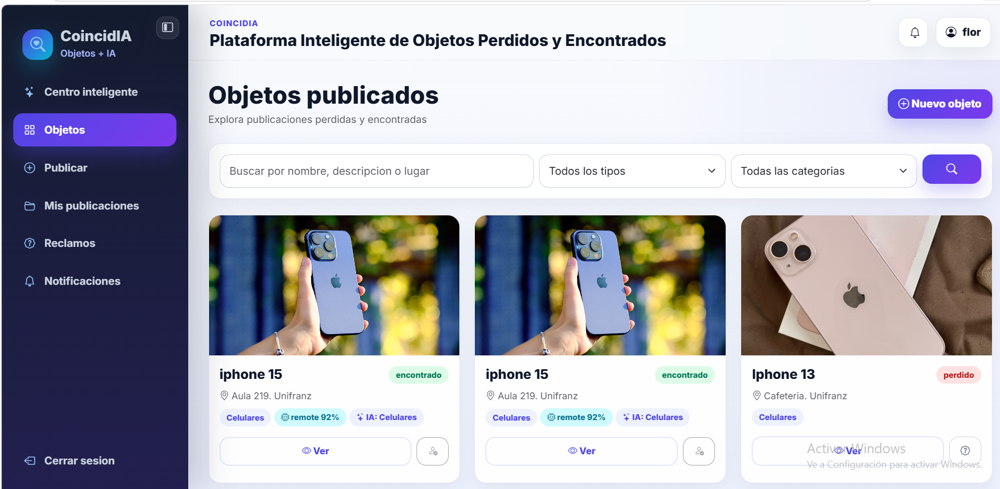
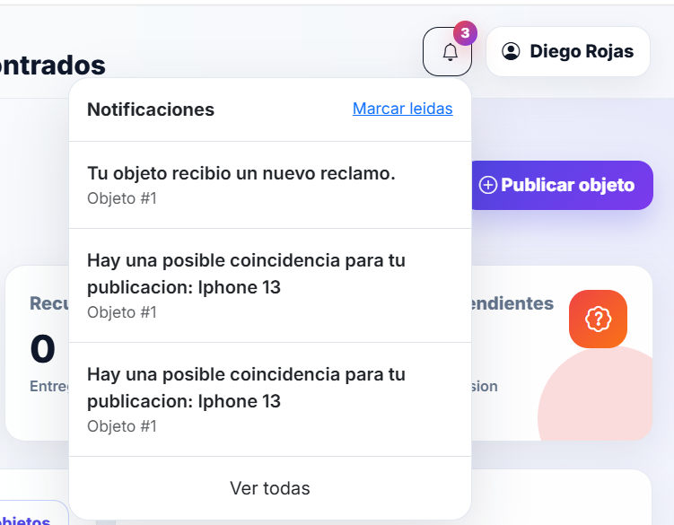
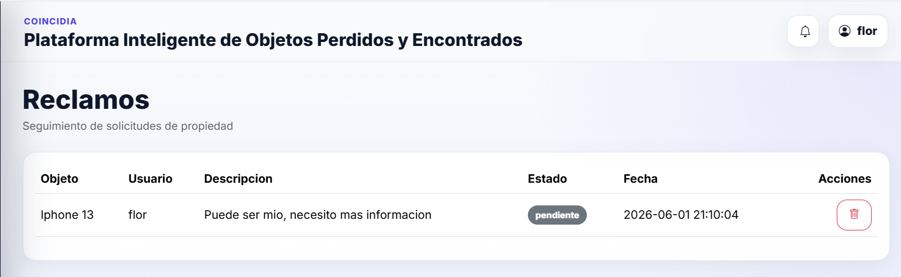
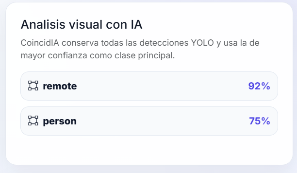

Plataforma web desarrollada para facilitar la recuperación de objetos mediante coincidencias inteligentes, notificaciones automáticas y análisis visual utilizando IA y YOLOv8.

Miles de objetos son extraviados cada año y muchas veces no existe una plataforma centralizada que permita relacionar objetos perdidos con objetos encontrados de manera rápida y eficiente.
CoincidIA utiliza Inteligencia Artificial para analizar imágenes, clasificar objetos y generar coincidencias automáticas que ayudan a incrementar las posibilidades de recuperación de pertenencias.
Desarrollar una plataforma inteligente para la gestión de objetos perdidos y encontrados mediante Inteligencia Artificial.
• Gestionar usuarios.
• Registrar objetos.
• Detectar coincidencias.
• Administrar reclamos.
• Generar notificaciones.
El desarrollo de CoincidIA integra tecnologías web, bases de datos e Inteligencia Artificial para ofrecer una plataforma moderna, escalable y eficiente.
Usuario ↓ Interfaz Web ↓ Controladores PHP (MVC) ↓ Base de Datos MySQL ↓ Módulo IA (Python + YOLOv8) ↓ Coincidencias Inteligentes
El usuario registrará una cuenta para acceder al sistema.
El usuario publicará objetos perdidos y encontrados mediante formularios.
El sistema generará coincidencias automáticas utilizando Inteligencia Artificial.
El usuario realizará reclamos para recuperar objetos encontrados.
El sistema notificará eventos relevantes a los usuarios.
A continuación se presentan algunas de las principales interfaces desarrolladas durante la implementación de CoincidIA.





CoincidIA incorpora Inteligencia Artificial mediante YOLOv8 para identificar automáticamente objetos dentro de imágenes y clasificarlos según categorías específicas.
La integración de visión computacional permite mejorar la precisión en las coincidencias entre objetos perdidos y encontrados, facilitando el proceso de recuperación para los usuarios.
Incrementa las probabilidades de encontrar objetos extraviados.
Coincidencias automáticas mediante análisis de imágenes.
Alertas automáticas para mantener informado al usuario.
Toda la información se gestiona desde una única plataforma.
CoincidIA
MVC
Scrum
MySQL
YOLOv8 + Python
Consulta el informe técnico completo del proyecto CoincidIA.
📄 Descargar Informe TécnicoPlataforma Inteligente de Objetos Perdidos y Encontrados
Proyecto Académico de Ingeniería de Sistemas (ISI-511)
Metodología Scrum • Arquitectura MVC • PHP • MySQL • Python • YOLOv8
Desarrollado por Flor Jaque Ibarra